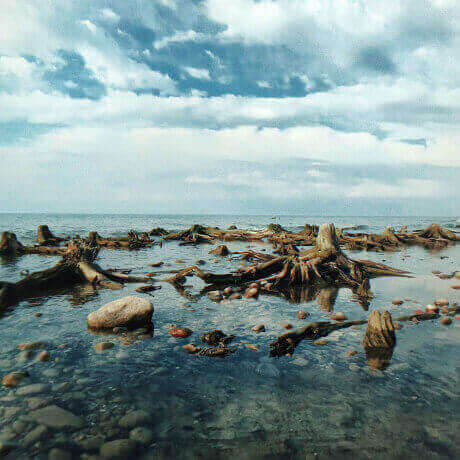
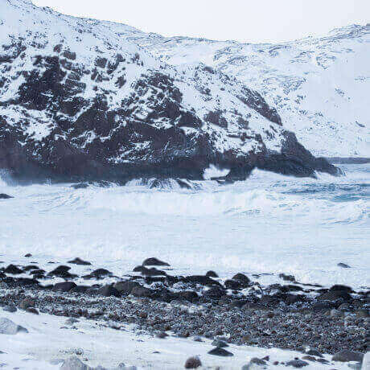
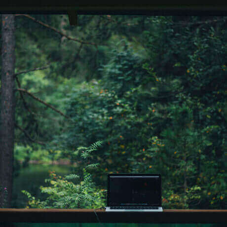
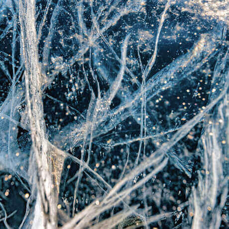
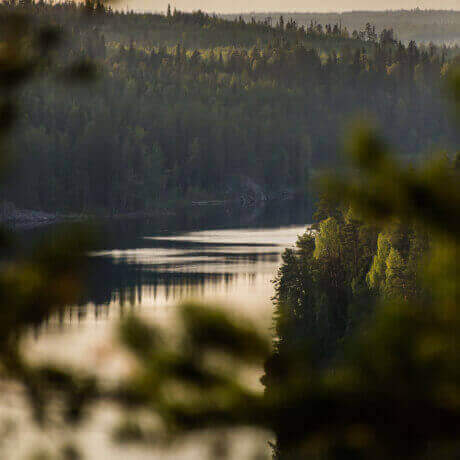

What didn't we see at home?
The real country isn't in the news but it is here.

Your shelf is top
What didn't we see there?
According to VTSIOM surveys 95% of Russians dream of going somewhere but only 36% plan to spend time in their native country. What didn't we see at home? Actually Russia is the whole universe with the tender sea of the South, dense forest of Sayan and severe ice plateau of Putorana. And also you can see all these beauties without millions on your accounts, international passport and multi-hour flights. For example, Vera Badhmakova is a brave young mother who took her three children, put them in her "Lada" and drove 20 thousand kilometers around her native country. We chose and discribed some interesting places worthy of your vacation.
- Time zone 11
- The objects of natural heritage of UNESCO 12
- The objects of cultural heritage of UNESCO 16
- Nature reserves 105
- Airports 241
-
Curonian spit
url
park-kosa.ruHere in the middle of forests and sand dunes you can see two water horizons : Curonian Lagoon on one side and the rippling by the waves of the Baltic Sea on the other. It is a unique natural area on the edge of the Russian enclave.
This is not the end of the Kaliningrad region. For example traveler and explorer there next door is also the westernmost point of Russia is Baltic Spit, - and the German heritage of a scattering of small seaside towns. The atmosphere of these places excludes the bustle and immerses you in the tranquility of nature and smell of the steel cool sea.
-
Kola
Almost the whole peninsula is behind polar circle. The Sami tundra from which to the South is the taiga and to the North is the Arctic Ocean, pretending to be Barents Sea.
Perhaps you have watched Zvyagintsev's films and tou even heard the story of the arctic festival in Teriberka. Possible the word "Khibiny" didn't remain under the snow of school memories of geography lessons. Maybe you not have been interested the ultra deep weel that penetrates the earth's crust and from apaties apathy covers you for a long time. However your dream of seeing the Northern Lights is starting to come true with a ticket to Murmansk.
-
Altai
url
FacebookAltai is one of the most beautiful places in Russia. This is primarily due to the mountains : if you go along the ridge you can see slopes covered with pine trees, mountain rivers and lakes. And if you open the windows in the car you will be able to get acquainted with the invisible wonder of these places is - mountain air. The climate in Altai is moderate what's why the best way to go here is the summer. So you will see all the variety of local flora and fauna.
Moose roam the forests of Altai, eagles fly over the ridges and roes graze on the plains. By the way, famous manuls are also inhabitants of the Altai territory.
-
Winter Baikal
Everyone knows Baikal as the largest lake in the world. Many always know that it is the largest source of fresh water and one of the most beautiful places in Russia.
Of course it is all true. However Baikal is a great choice for competitions skijoring. This is a sport when a skier binds himself to a motor cycle and the tandem tries to develop as much speed as possible on the ice. In March 2019 a World Record was set at the "Baikal Mile" festival - 197.011 km/h.
-
Karelia
Siberia doesn't tend in the Urals but in Karelia. Siberian larch that forms the taiga doesn't grow west of Vodlozero. However here it reaches 30 metres - forests of Karelian national parks have never known an ace because of impassability of swaps. Some pines are more than half a thousand years old. You can touch to a living creature who has seen the sun before Ivan IV saw it. You won't find a trail for a hundred kilometers in a virgin forest. And on rare paths trees a couple of meters from the ground are marked with bear claws. This is so that everyone knows who is the boss here.
to lake Baikal «on dogs»
Based on the educational topic about the TRANS-Siberian railway and iframes — travel from the capital to lake Baikal by train.